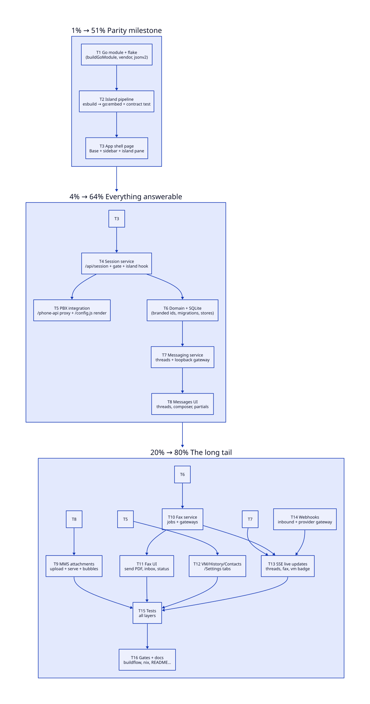

WebPhone → Unified Communications
Rebuild the static SIP.js softphone as a Go service: phone, SMS/MMS threads, fax, voicemail, history, contacts and settings — one binary, one page, zero page reloads.
Summary
The current webphone is a static site: the browser speaks SIP/WebRTC directly and reads voicemail/history from the PBX's phone-api. That architecture cannot do SMS/MMS threads, fax documents or attachments — there is no server to persist or broker them. The rebuild makes the webphone a Go application (templ + HTMX + templ-components + cqrs-htmx transport) that keeps the proven SIP.js call island byte-for-byte where it matters (same DOM ids, same bundle contract) and grows server-rendered tabs around it.
Stack decision
Adopted
- templ + templ-components — full UI kit (121 components, Tailwind v4, CSP-safe, dark mode)
- cqrs-htmx root library — command/query HTTP binding, CSRF, SSE broadcaster, embedded HTMX script, security headers
- go-cqrs-lite dispatchers — command/query seams behind every tab action
- samber/do DI composition root, koanf config, slog logging
- modernc.org/sqlite — pure-Go persistence (threads, messages, faxes, contacts)
- net/http ServeMux routing (cqrs-htmx's documented native shape)
Rejected: cqrs-htmx setup bundle
setup.New wires event-sourced usermgmt users
(registration, WebAuthn/TOTP, admin panel, dashboard). The
softphone's identity is the PBX extension + directory password —
a second user database would be a split brain: two identity
sources, two passwords, two truths. The root library keeps the
transport value (handlers, CSRF, SSE, HTMX embed) without owning
identity. Session = extension credentials validated by the PBX
itself (successful SIP REGISTER via the island, phone-api 401s
on everything else).
Target architecture
Browser (one page, zero reloads — tab swaps are HTMX partials) ├─ SIP call island (src/app/*.js, ported ~verbatim, same DOM contract) │ REGISTER/INVITE/REFER/DTMF direct to PBX over wss://…/sip │ calls survive tab switches (island never unloads) └─ templ shell + tabs: Phone · Messages · Fax · Voicemail · History · Contacts · Settings Go service (single binary) ├─ session store (in-memory, cookie) — extension creds, gate middleware ├─ /phone-api/* proxy (injects Basic auth from session) — island panels unchanged ├─ messaging service — threads, SMS/MMS, attachments (SQLite) │ └─ MessageGateway: loopback (dev) | webhook (provider/PBX bridge) ├─ fax service — jobs, PDF documents (SQLite + spool dir) │ └─ FaxGateway: loopback | webhook ├─ phone-api client — voicemail, CDR history (server-side, for tabs) ├─ inbound webhooks /hooks/message /hooks/fax (shared secret) └─ SSE /events — message, fax, voicemail events → live tab updates
Gateways are the plugin seam: FreeSWITCH bridges (mod_sms chatplan, spandsp fax) or any HTTP provider implement one small JSON contract; loopback mode makes the whole UI work locally with zero PBX.
Data model (first-principles pass)
- Thread — per extension × remote number; lifecycle: created on first message; fields: last activity, unread count. Conversation axis only.
- Message — belongs to one thread;
Channel(SMS|MMS) derived from attachments (empty = SMS);Direction(in|out); outbound carriesStatus(queued|sent|delivered|failed) — inbound never does (make impossible states unrepresentable: separate types). - Attachment — belongs to one message; content-addressed file on disk + mime/size metadata.
- FaxJob — document delivery, not a conversation: direction, remote, status machine (queued→sending→transmitted|failed | received), PDF path, provider ref.
- Contact — per-extension personal contact (name, number); shared contacts stay server config.
- Branded IDs (go-branded-id style) for Thread/Message/FaxJob; ULID storage keys; E.164-normalized remote numbers as thread keys.
Pareto tiers
Comprehensive plan
| # | Task | Tier | Impact | Effort |
|---|---|---|---|---|
| T1 | Go module + flake: buildGoModule, vendor, GOEXPERIMENT=jsonv2, .buildflow.yml | 1% | foundational | M |
| T2 | Island asset pipeline: esbuild stage → go:embed + served-page contract smoke test | 1% | keeps E2E contract | M |
| T3 | App shell: templ Base, sidebar nav (HTMX partial swaps), island pane, Tailwind CSS build (teal accent) | 1% | the product surface | L |
| T4 | Session service: /api/session POST/DELETE, cookie gate middleware, island session.js hook | 4% | auth spine | M |
| T5 | PBX integration: /phone-api proxy with Basic injection + /config.js rendered from koanf | 4% | island parity | M |
| T6 | Domain types + SQLite stores + migrations (threads, messages, attachments, faxes, contacts) | 4% | data spine | L |
| T7 | Messaging service: send/receive, thread upsert, unread counts, loopback MessageGateway | 4% | SMS works | L |
| T8 | Messages UI: thread list, thread view, composer, optimistic send, partial rendering | 4% | the headline feature | L |
| T9 | MMS: attachment upload (multipart), content-addressed store, bubble rendering, download | 20% | MMS works | M |
| T10 | Fax service: job state machine, PDF spool, loopback + webhook FaxGateway | 20% | fax works | M |
| T11 | Fax UI: PDF upload form, inbox/outbox, status badges, document download | 20% | fax visible | M |
| T12 | Voicemail / History / Contacts / Settings tabs via server-side phone-api client | 20% | parity + upgrade | L |
| T13 | SSE hub + htmx sse ext: live threads, fax updates, voicemail badge | 20% | feels alive | M |
| T14 | Inbound webhooks (/hooks/message, /hooks/fax) + outbound provider gateway, shared-secret auth | 20% | production path | M |
| T15 | Tests: domain table tests, service tests (sqlite), handler httptest, contract smoke | 20% | trust | L |
| T16 | Gates + docs: buildflow green, nix build, flake check, README/FEATURES/TODO/CHANGELOG/AGENTS | 20% | shippable | M |
Execution graph

Everything else (explicitly out of this pass)
- Server-side SIP stack (Go REGISTER/MESSAGE) — the browser island stays the SIP endpoint; a Go SIP UA is a separate project.
- Browser E2E with a live PBX — owned by the consuming stack's suite; this repo ships the contract smoke test instead.
- German translations for the new tabs (island stays en/de) — TODO_LIST.
- Session persistence across restarts (SQLite sessions) — in-memory v1, TODO_LIST.
- FreeSWITCH ESL adapter implementation — the webhook contract replaces it until a live-PBX verification loop exists (verify-before-filing).